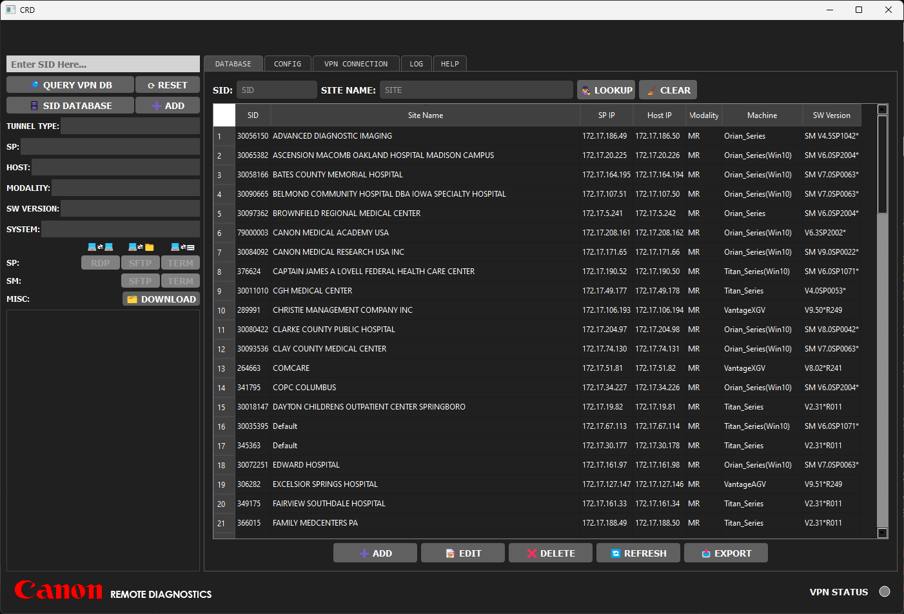
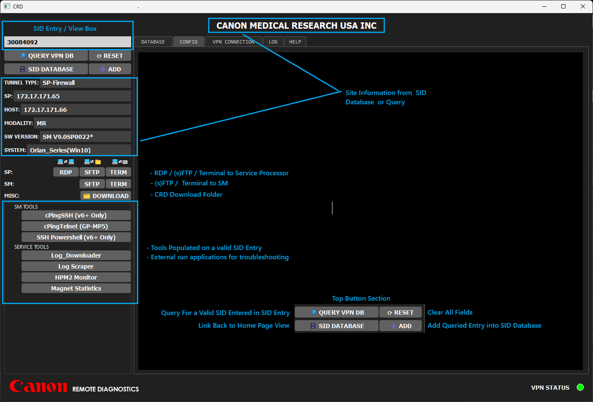
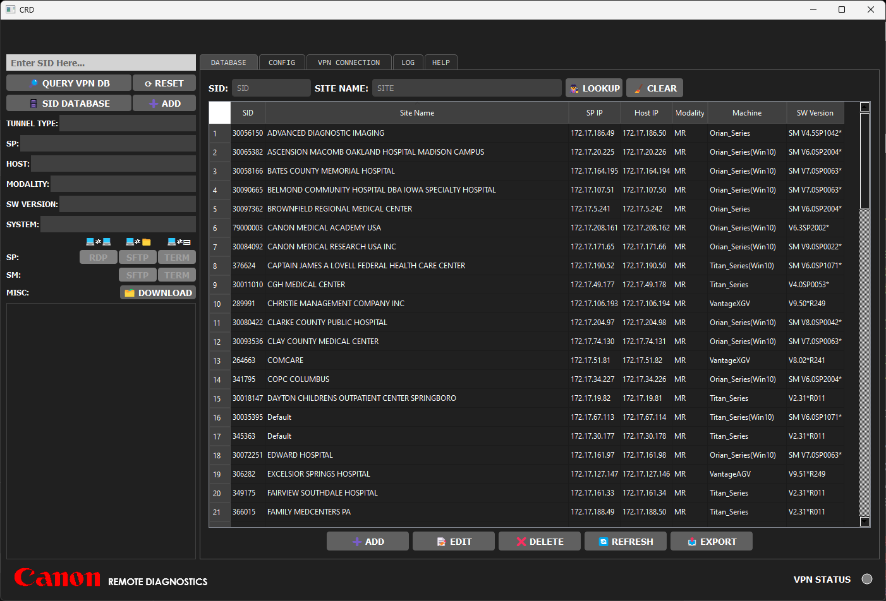
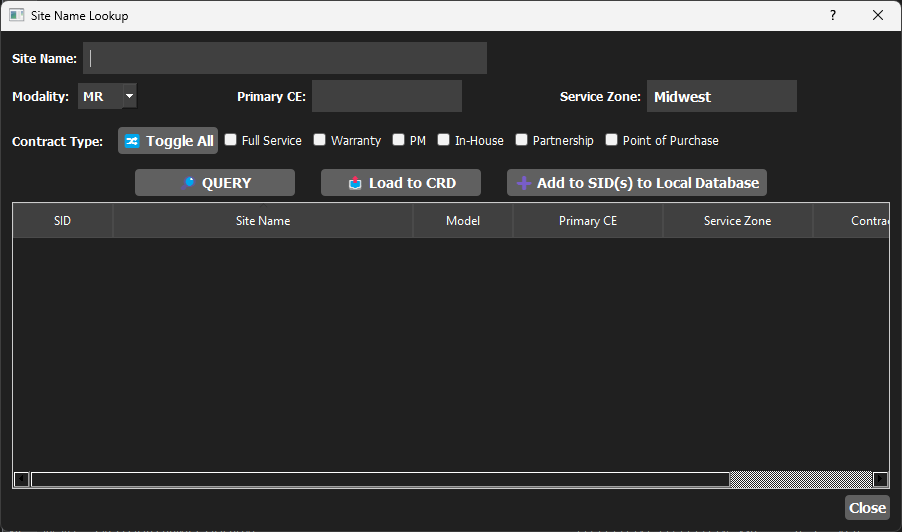
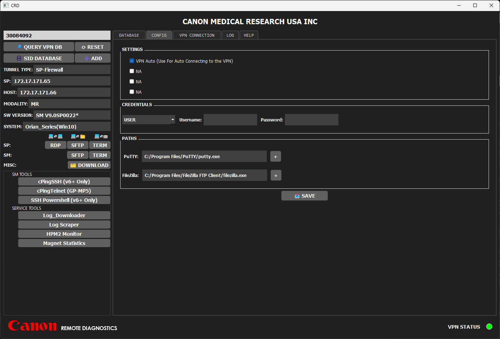
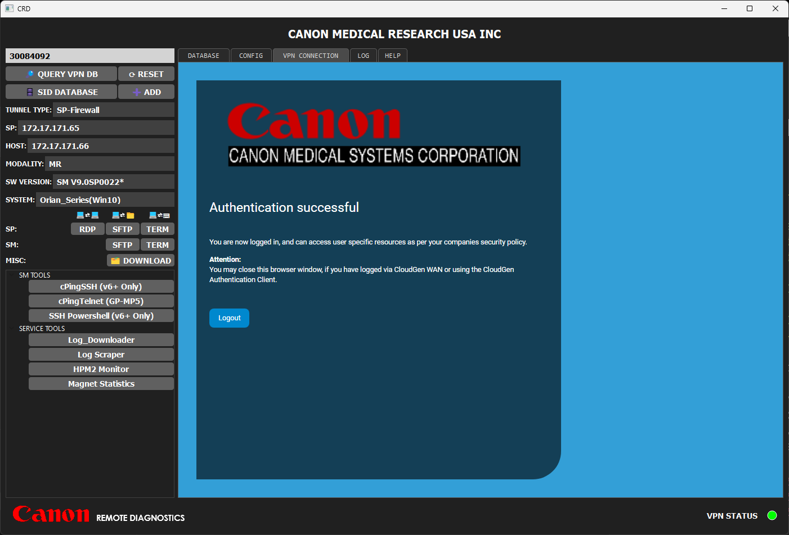
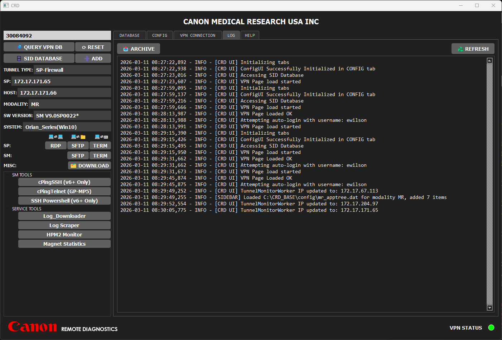
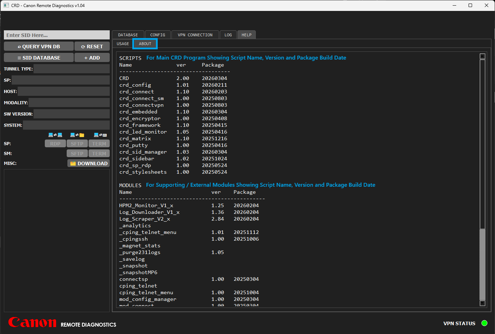

Canon Remote Diagnostics with VPN Connectivity, SID Management, and Remote Access
Main CRD Interface / Home Page

Sidebar

SID Database Tab / Home Page

SID Database Lookup/Query

Configuration Tab

VPN Status

Log Tab

About Tab
